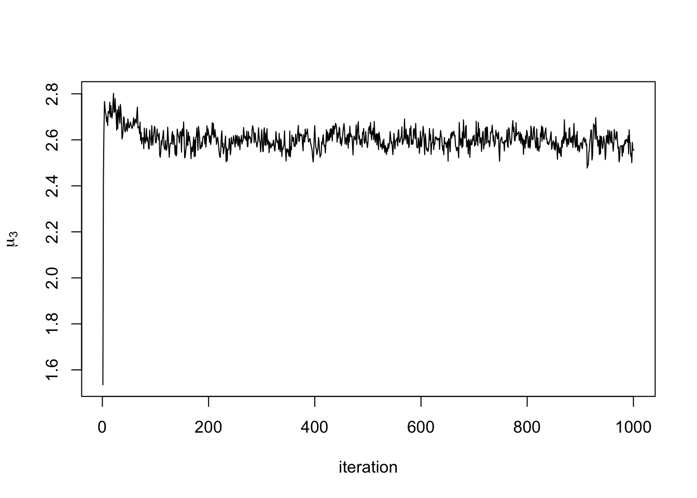

Last updated: 2022-07-30
Checks: 4 3
Knit directory: workflowr/
This reproducible R Markdown analysis was created with workflowr (version 1.7.0). The Checks tab describes the reproducibility checks that were applied when the results were created. The Past versions tab lists the development history.
The R Markdown file has unstaged changes. To know which version of
the R Markdown file created these results, you’ll want to first commit
it to the Git repo. If you’re still working on the analysis, you can
ignore this warning. When you’re finished, you can run
wflow_publish to commit the R Markdown file and build the
HTML.
Great job! The global environment was empty. Objects defined in the global environment can affect the analysis in your R Markdown file in unknown ways. For reproduciblity it’s best to always run the code in an empty environment.
The command set.seed(20190717) was run prior to running
the code in the R Markdown file. Setting a seed ensures that any results
that rely on randomness, e.g. subsampling or permutations, are
reproducible.
To ensure reproducibility of the results, delete the cache directory
running_mcmc_cache and re-run the analysis. To have
workflowr automatically delete the cache directory prior to building the
file, set delete_cache = TRUE when running
wflow_build() or wflow_publish().
Great job! Using relative paths to the files within your workflowr project makes it easier to run your code on other machines.
Great! You are using Git for version control. Tracking code development and connecting the code version to the results is critical for reproducibility.
The results in this page were generated with repository version f1bf19d. See the Past versions tab to see a history of the changes made to the R Markdown and HTML files.
Note that you need to be careful to ensure that all relevant files for
the analysis have been committed to Git prior to generating the results
(you can use wflow_publish or
wflow_git_commit). workflowr only checks the R Markdown
file, but you know if there are other scripts or data files that it
depends on. Below is the status of the Git repository when the results
were generated:
Ignored files:
Ignored: .Rproj.user/
Untracked files:
Untracked: .DS_Store
Untracked: .gitignore
Untracked: analysis/running_mcmc_cache/html/unnamed-chunk-3_2dd19e162e1ca93479a84eafd24f9f9f.RData
Untracked: analysis/running_mcmc_cache/html/unnamed-chunk-3_2dd19e162e1ca93479a84eafd24f9f9f.rdb
Untracked: analysis/running_mcmc_cache/html/unnamed-chunk-3_2dd19e162e1ca93479a84eafd24f9f9f.rdx
Untracked: analysis/running_mcmc_cache/html/unnamed-chunk-6_ab230b3b5e2bfb8ef76ae36c86e21c16.RData
Untracked: analysis/running_mcmc_cache/html/unnamed-chunk-6_ab230b3b5e2bfb8ef76ae36c86e21c16.rdb
Untracked: analysis/running_mcmc_cache/html/unnamed-chunk-6_ab230b3b5e2bfb8ef76ae36c86e21c16.rdx
Unstaged changes:
Modified: analysis/running_mcmc.Rmd
Modified: analysis/running_mcmc_cache/html/__globals
Modified: analysis/running_mcmc_cache/html/__objects
Modified: analysis/running_mcmc_cache/html/__packages
Deleted: analysis/running_mcmc_cache/html/unnamed-chunk-3_51180ae92ff43303ad266c69e8feed76.RData
Deleted: analysis/running_mcmc_cache/html/unnamed-chunk-3_51180ae92ff43303ad266c69e8feed76.rdb
Deleted: analysis/running_mcmc_cache/html/unnamed-chunk-3_51180ae92ff43303ad266c69e8feed76.rdx
Modified: output/hyperparameters.Rdata
Note that any generated files, e.g. HTML, png, CSS, etc., are not included in this status report because it is ok for generated content to have uncommitted changes.
These are the previous versions of the repository in which changes were
made to the R Markdown (analysis/running_mcmc.Rmd) and HTML
(docs/running_mcmc.html) files. If you’ve configured a
remote Git repository (see ?wflow_git_remote), click on the
hyperlinks in the table below to view the files as they were in that
past version.
| File | Version | Author | Date | Message |
|---|---|---|---|---|
| Rmd | c1e13d0 | Hillary Koch | 2022-07-30 | working with new computer |
| html | c1e13d0 | Hillary Koch | 2022-07-30 | working with new computer |
The final step of CLIMB involves doing inference on the parsimonious Gaussian mixture using MCMC. MCMC is an iterative method, and thus the user needs to specify how many iterations to use. We recommend running a quick pilot analysis–say, for 10 iterations. This pilot analysis will give a good idea of how long an analysis will need to run for a given larger number of iterations (say, 20,000 iterations).
You can run an mcmc simply with the function run_mcmc().
This function calls a script written in Julia, and executes everything at the
default settings in the CLIMB methodology. The user needs to provide 4
arguments:
dat: the input data you’ve been using throughout the
analysis
hyp: the hyperparameter values estimated in the
previous step
nstep: number of MCMC iterations to run
retained_classes: the parsimonious list of candidate
latent classes, after finally filtering out by prior weights as done in
the previous step
First, we load in our data, list of candidate latent classes, and estimated hyperparameters.
data("sim")
load("output/hyperparameters.Rdata")
retained_classes <- readr::read_tsv("output/retained_classes.txt", col_names = FALSE)Now we are ready to launch an MCMC:
results <- run_mcmc(sim$data, hyp = hyp, nstep = 1000, retained_classes = retained_classes)
out <- extract_chains(results)Running the MCMC...100%|████████████████████████████████| Time: 0:02:14The object results contains 3 objects:
chain: the estimate parameters over the course of
nstep iterations
acceptane_rate_chain: an \(M\times\)nstep matrix of the
acceptance rates for each cluster covariance. The proposals for each
cluster are adaptively tuned such that the acceptance rates converge to
about 0.3
tune_df_chain: the tuning degrees of freedom across
the chain, adjusted to yield optimal acceptance rates
results is effectively a Julia object, so the first
thing you should do with this object is to extract the data for R’s
use:
out will contain all the different chains from the MCMC.
For example, you can check the MCMC trace plots. Here is the trace plot
of the mean from the first cluster in the third dimension:
plot(out$mu_chains[[1]][,3], type = "l", xlab = "iteration", ylab = expression(mu[3]))
| Version | Author | Date |
|---|---|---|
| c1e13d0 | Hillary Koch | 2022-07-30 |
More specifically, extract_chains() returns a list with
4 elements. First, recall that M is the number of input
classes, D is the dimension of the data, and let
iterations be nstep+1. The output from
extract_chains() contains:
mu_chains: a list with M elements, each
element a matrix of dimension iterations x D.
mu_chains[[i]] is the MCMC samples for the mean vector of
cluster i.
Sigma_chains: a list with M elements,
each element an array of dimension D x D x iterations.
Sigma_chains[[i]] is the MCMC samples for the covariance
matrix of cluster i.
prop_chain: A matrix of dimension
M x iterations, containing the MCMC samples for the mixing
proportions of each class.
z_chain: A matrix of dimension
n x iterations, containing the MCMC samples for the class
labels of each observation. These labels correspond to the row indices
of retained_classes (above).
These posterior samples can be used for many downstream analyses.
In addition to viewing trace plots, one could run multiple parallel
MCMC chains in order to assess convergence quantitatively via the
Gelman-Rubin convergence diagnostic. The code below replicates the
previous MCMC 3 times, and calculates the potential scale reduction
factors (PSRFs) for each parameter estimate. Ideally, each PSRF should
be close to 1. Note that calculate_gelmanRubin returns NA
for parameters associated with a 0 class label, since these parameters
do not actually get sampled during MCMC.
# Run 3 replicate MCMC chains
results3 <- purrr::map(1:3, ~ run_mcmc(sim$data, hyp = hyp, nstep = 500, retained_classes = retained_classes))
chain_list <- purrr::map(results3, extract_chains)
burnin_list <- rep(list(1:100), length(chain_list))
# calculate potential scale reduction factors for each parameter
PSRFs <- calculate_gelmanRubin(chain_list, burnin_list)
str(PSRFs)List of 3
$ PSRF_mu : num [1:13, 1:3] 1.06 1 1.02 NA NA ...
$ PSRF_Sigma: num [1:3, 1:3, 1:13] 1.11 NA 1.12 NA NA ...
$ PSRF_prop : num [1:13] 1.06 1 1.02 1 1.02 ...Below we plot histograms of the PSRFs for each parameter. Even after running these chains for a short time, we already have achieved good convergence properties. Unsurprisingly, cluster mean and proportion estimates converge faster than the covariance parameters. In practice, for larger and more complex datasets, chains will need to be run for longer than what was done here.
par(mfrow = c(1,3))
purrr::map(PSRFs, ~ as.vector(.x) %>%
magrittr::extract(!is.na(.))) %>%
purrr::iwalk(~hist(.x, xlab = gsub(pattern = "_", replacement = " ", .y), main = ""))